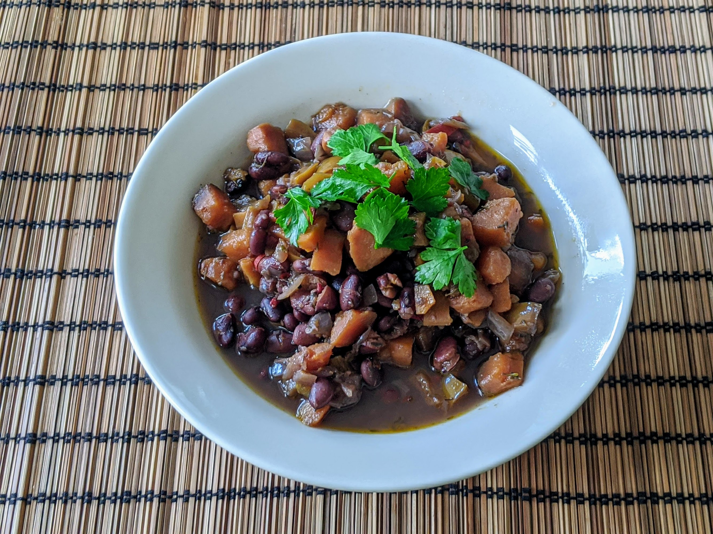

Feijoada végétarienne

Pour 7-8 personnes :
- 500g de haricots noirs secs
- Deux oignons
- Deux gros poivrons (rouges ou verts)
- Quatre petites tomates
- 6 gousses d'ail
- Deux grosses patates douces
- Un piment
- Un peu de thym
- Un peu de persil
- Sel, poivre
- Laisser les haricots dans beaucoup d'eau pendant une nuit (tranquille).
- Le lendemain, les rincer, les égoutter, et les faire cuire dans beaucoup d'eau à feu moyen pendant une bonne heure, jusqu'à ce qu'ils soient modérément tendres. Ne pas jeter l'eau de cuisson.
- Pendant ce temps, éplucher et couper les légumes en petits dés (de la taille des haricots, comme ça c'est joli). Écraser l'ail.
- Faire revenir l'oignon, le poivron, les tomates, l'ail et le piment dans de l'huile d'olive une dizaine de minutes, dans une grosse poêle ou cocotte un peu plate.
- Ajouter deux bols d'eau de cuisson de haricots, puis les haricots eux-mêmes,
avec les patates douces et du thym. Faire cuire une demi-heure à feu moyen, en mélangeant de temps en temps.
- Ajouter le persil et le sel, faire cuire une dizaine de minutes de plus, servir chaud.
Retour à la liste des recettes